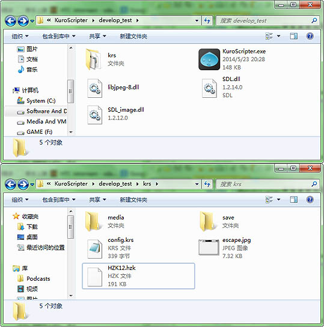
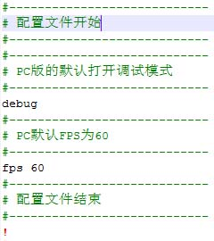
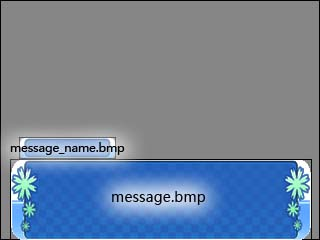
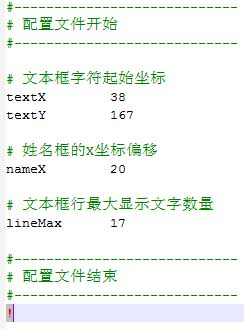
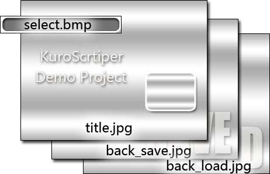
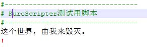
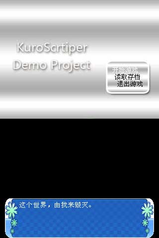
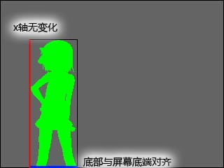
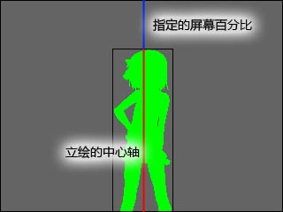

KuroScripter开发者使用简述
建议使用Win32版的KuroScripter进行移植、开发的测试——使用Nspire的模拟器理论上也是可以的。
你可以点击这里进行下载。

krs/中的HZK12.hzk是点阵字库（12x12），config.krs为全局配置文件。escape.jpg什么用途自己猜测。
可以任何文本编辑器对krs拓展名的脚本进行编辑（本文使用notepad++，使用了自定义的高亮）。
首先配置krs/config.krs这一全局配置文件。

以#（半角井号）开头的一行在脚本中被认为是注释，不进行解析。debug模式从krs/media下读取资源，release模式从krs/game.krp包中读取资源。全局配置中若使用fps命令，则将后面的数值指定为fps。
本篇默认使用debug模式。（即开发过程中我们的所有素材都是放置在krs/media中的。）
若不指定fps或者指定fps为0，则使用默认fps=15；另注，所有krs脚本都必须以!（半角感叹号）结束。
在开始编写脚本之前，我们需要选取游戏的通用界面素材。
首先是对话框message.bmp与message_name.bmp。

message.bmp为对话框主体，message_name.bmp为显示名称使用。kuroScripter中使用RGB(255,0,255)为透明色，填充为该颜色的位置将被绘制为透明。素材选取完成后需要对对话框的位置、文字显示位置进行配置。
（对话框的边缘效果透明就是这么做的。）

文本框为紧挨屏幕底部，姓名框紧挨文本框上部。
所有上述素材配置完成后，就可以开始下一步的脚本编写了。建立krs/media/main.krs。
kuroScripter开始新游戏时自动读取main.krs脚本。某行命令如果以全角字符开始，则认为是一句需要显示的对话。

编写完后运行KuroScripter进行测试，开始新游戏，执行效果如图。
如果想要设定说话人名称。请使用n命令，后面跟说话人名称。比如n 死者使用n ~可以消去说话人姓名。
n ~
如果想要显示背景，可以使用bg命令，后跟文件名（文件名中可以包含路径）。
bg bg/000.jpg使用bg ~可以消去背景。
bg ~
使用cr命令可以创建一个立绘。
cr 0 lihui/ayako000.bmpcr命令后跟一个整数和一个文件名。整数为立绘标号（范围0-8）。
cr 0 ~使用cr，将会使立绘的底端与屏幕底端对齐。但横坐标没有变化。

mr 0 0.5会将标号为0的立绘，以立绘的中心轴为基准，水平移动到屏幕的二分之一处。

mrx 0 23将立绘标号为0的立绘移动到(23，56)像素的位置。
mry 0 56
dar
以:(半角冒号)开头的一个标识符将被认为是标号。
:拒绝一起去使用go命令可以跳转到指定标号。
go 拒绝一起去
si 一起去选择的结果将被保存在0号变量中（保存的结果以0开始，上述例子中选择“一起去”则会保存0，选择“拒绝一起”则会保存1……）。
si 拒绝一起
si 再等等
sl
if 《操作数》 《符号》 《操作数》 《语句标号》其中，操作数可以是变量或者整数。变量的写法为：$《变量序号》，比如
$0 # 零号变量操作符可以而为eq/lt/le
eq #=> 相等例子：
lt #=> 小于
le #=> 小于等于
if $0 eq 1 选择拒绝一起当0号变量为1时跳转到标签“选择拒绝一起”。
switch ending0.krs